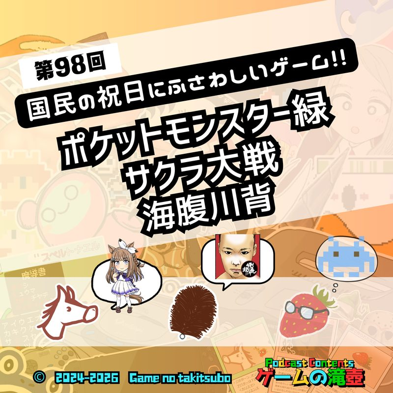
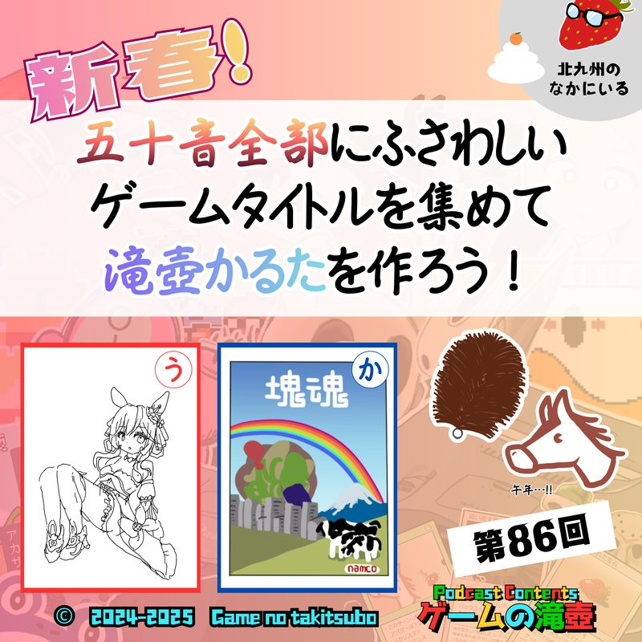
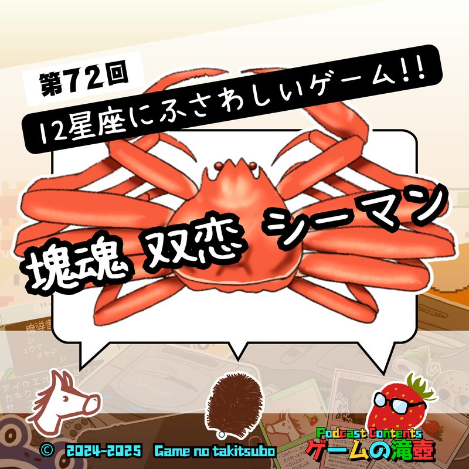

ABOUTこの回について
指をお使いになっているすべての皆さん！
五本の指に対応するゲームは何なのか気になっていませんか？
五指にふさわしいゲーム、すべて決めます！
概要欄をすべて表示
■ゲームの滝壺 エピソード研究所
https://game-takitsubo.com/lab.html
■チャプター
(00:00)オープニング
(02:00)親指
(11:10)人差し指
(15:32)中指
(23:15)薬指
(27:45)小指
(36:26)二指・五指
(39:58)五指まとめ
(41:50)おたより紹介
(1:21:27)アートワーククイズ
(1:31:05)ゲーム開発情報
(1:36:53)エンディング
■主な登場ゲームタイトル（★=メインで語ったタイトル）
【本編】
Nintendo Switch Sports Resort
ゴッド・オブ・ウォー
ドラゴンクエストV 天空の花嫁
オクトダッド ─タコと呼ばないで─
DEATH STRANDING
ポケットモンスター
ファイナルファンタジーIV
Fallout シリーズ
逆転裁判
MOTHERシリーズ
クッキングママ
タイムクライシス
ザ・ハウス・オブ・ザ・デッド
ナムコミュージアム
Please, Don’t Touch Anything
トリッカル・もちもちほっペ大作戦
グランド・セフト・オート
超兄貴
怒
怒首領蜂
ドカポン！怒りの鉄剣
Cairn
Getting Over It with Bennett Foddy
結婚 Marriage
バニーガーデン
お姉チャンバラ
エルデンリング
メイドインワリオ
龍が如く
スーパーマリオ ヨッシーアイランド
赤い糸DS
ときめきメモリアル
Unravel
Baby Steps
バイオミラクル ぼくってウパ
パラサイト・イヴ2
スマイルプリキュア！ レッツゴー！ メルヘンワールド
ポケモンスナップ
Hand Simulator
寿司打
ザ・タイピング・オブ・ザ・デッド
【おたより紹介】
IZEA:10puzzle Rogue-Lite RPG!
東方シリーズ
ゼンレスゾーンゼロ
ブレスオブファイア
シャイニング・フォース
ロックマンX
フォートナイト
鳥として生きた男 その壮絶な人生
スターフォックス
ゼルダの伝説 ブレス オブ ザ ワイルド
マブラヴ
マブラヴ ガールズガーデン
トルネコの大冒険 不思議のダンジョン ちょっとステキなリマスター
風来のシレン6 とぐろ島探検録
ネコジャラ物語
シャドウゲイト
グランツーリスモ
シュ～ペロ
【アートワーククイズ】
I.Q インテリジェントキューブ
Ib
【エンディング】
原神
Order of the Sinking Star
■その他登場した話題
■今週のゲーム実況
Order of the Sinking Star
https://www.youtube.com/playlist?list=PLeeKVbpadKOM
■ゲームの滝壺公式サイト
https://game-takitsubo.com/
■出演
夜中たわし：https://x.com/tawwwashix
ひゅうま：https://x.com/hyuuma_tktb
イチィゴォー：https://x.com/ichigo_tktb
■使用BGM・SE
夢物語 / 騒音のない世界：https://www.youtube.com/watch?v=6AOOtngbVF8
優日のすたるじっく：https://www.youtube.com/@nostalgic_BGM
きらきら魔法ガール / ゆめひつじ：https://www.youtube.com/watch?v=dgl43v4swfI
効果音ラボ：https://soundeffect-lab.info/
OtoLogic：https://otologic.jp
■おたよりはこちら
おたよりフォーム
https://forms.gle/jot3ETXF19whQUEP9
メールアドレス
game.tktb@gmail.com
■SNS等
公式X（旧Twitter）
https://x.com/game_tktb
インスタグラム
https://www.instagram.com/game_tktb/
YouTubeチャンネル
https://www.youtube.com/@game-tktb
感想等、ハッシュタグ #ゲームの滝壺 で投稿いただければ大変励みになります！
この回は名物企画「ふさわしいゲーム」のひとつです。
GAMES & KEYWORDS登場ゲームタイトル・キーワード
RELATED関連する回


